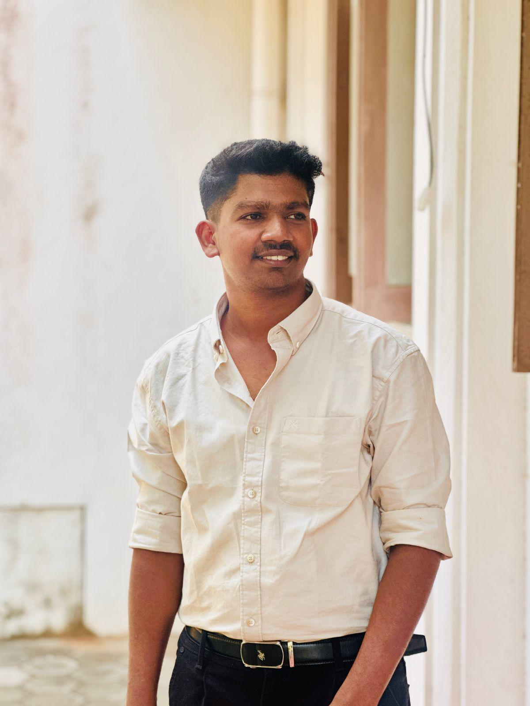

KTern.AI Infinity Continuum Team Lead
Leading the SAP run-phase automation product line at KTern.AI.
Open to AI product engineering roles
|
I build enterprise AI agents and full-stack platforms. My work connects LLMs, MCP and AWS Bedrock to SAP landscapes and multi-tenant SaaS products.

// profile.ts const mugesh = { role: "AI Product Engineer", stack: ["MCP", "Bedrock", "NestJS"], focus: "agentic workflows", base: "Dharmapuri, IN" };
AI-focused Product Engineer with 4+ years of experience building enterprise SaaS platforms, AI agents, full-stack applications and SAP integration solutions. I work across Angular, React, Next.js, Node.js, NestJS, Python and FastAPI, plus LLMs, AWS Bedrock, agentic workflows and Model Context Protocol (MCP).
I built SAP data extraction solutions with the KTern connector and ABAP ADT MCP, backed by MongoDB and AWS S3, for SAP system analysis. I pair engineering with requirement analysis, solution design, customer engagement and technical ownership.
Issued Nov 2026 · Valid to Nov 2027
Issued Oct 2023
Sona College of Technology · 2018 – 2022 · Best Student of the Year 2018–19
Leading the SAP run-phase automation product line at KTern.AI.
Industrial-based embedded system development with IoT.
Multi-tenant AI agent platform
Large-scale data reconciliation platform
AI agent for ERP–EWM reliability
KTern.AI Infinity Continuum
Sona College of Technology. Best Student of the Year.
NSIC IoT internship, then SDE Intern at KTern.AI.
Angular, Node.js and MongoDB SaaS features.
Microservices, data pipelines, enterprise integrations.
AI agents, LLMs, AWS Bedrock and MCP.
Leading Infinity Continuum. Certified in Nov 2026.
Designing production agentic systems for enterprises.
Open to AI product engineering, forward deployed and senior full-stack roles.
Dharmapuri, India